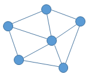
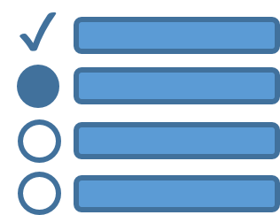
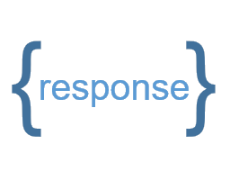

Session History (-)
Your query history will be displayed here. It can be edited or re-set.
Query
Import



Response Input:
Copy-paste a JSON TRAPI Response into the box below
List A (-)
Items in this list can be compared to those in List B, or added to a node in the query_graph via the bulk import functionality.
List B (-)
Items in this list can be compared to those in List A, or added to a node in the query_graph via the bulk import functionality.
Compare Lists A and B
Items in lists A and B will be automatically displayed side-by-side for ease of comparison.
Recent ARAX System Activity